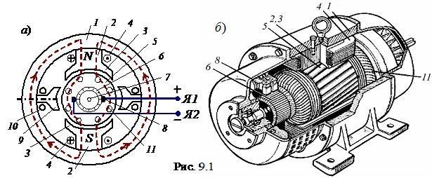
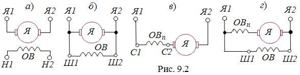

|
9.1.2. Устройство машин постоянного тока
Основными частями МПТ (рис. 9.1) являются статор и якорь, отделённые друг от друга воздушным зазором.
 Статор – это стальной цилиндр 1, внутри которого крепятся главные полюсы 2 с полюсными наконечниками 3, образуя вместе с корпусом магнитопровод машины (рис. 9.1а). Полюсные наконечники служат для равномерного распределения магнитной индукции в зазоре между полюсами статора-индуктора и якоря. На главных полюсах расположены последовательно соединённые катушки обмотки возбуждения 4, предназначенные для создания неподвижного магнитного потока Фв машины. Концы обмотки возбуждения ОВ выводят на клеммный щиток, расположенный на корпусе машины (рис. 9.1б). Помимо основных полюсов, внутри статора располагают дополнительные полюсы 9 с обмотками 10, которые служат для уменьшения искрения в скользящих контактах (между щётками и коллектором). Якорь (подвижная часть машины) – это цилиндр 5, набранный из листов электротехнической стали, снаружи которого имеются пазы, в которые уложена якорная обмотка 11. Отводы обмотки якоря (ОЯ) припаивают к пластинам коллектора 6, расположенного на вращающемся в подшипниках валу 7. Коллектор представляет собой цилиндр, набранный из медных пластин, изолированных друг от друга и от вала и закреплённых (по технологии "ласточкина хвоста") на стальной втулке. Коллектор играет роль механического выпрямителя переменной ЭДС, индуктируемой в обмотке якоря. К коллектору с помощью пружин прижимаются неподвижные медно-графитовые щётки 8, соединённые с клеммами Я1 и Я2 щитка (рис. 9.1, б).
Образовавшиеся скользящие контакты дают возможность соединить вращающуюся ОЯ с внешней электрической цепью (снять выпрямленное напряжение с коллектора (генераторный режим) или соединить якорную обмотку с источником постоянного напряжения и распределить токи в стержнях ОЯ таким образом, чтобы их направления под разноименными полюсами были бы противоположными (двигательный режим)). Суммарное сопротивление цепи якоря Rя = 0, 5…5 Ом, а обмотки возбуждения Rв – несколько десятков ом. 
Часть машины, в которой индуктируется ЭДС, принято называть якорем, а часть машины, создающей основное магнитное поле (магнитный поток) – индуктором. В машинах постоянного тока якорем является ротор, а индуктором – статор. В зависимости от того, как обмотка возбуждения включена относительно сети и якоря, различают МПТ независимого возбуждения (ОВ к якорю не подключена) и МПТ с самовозбуждением, которое подразделяется на параллельное, последовательное и cмешанное. На рис. 9.2 приведены электрические схемы возбуждения указанных типов МПТ.
| |||